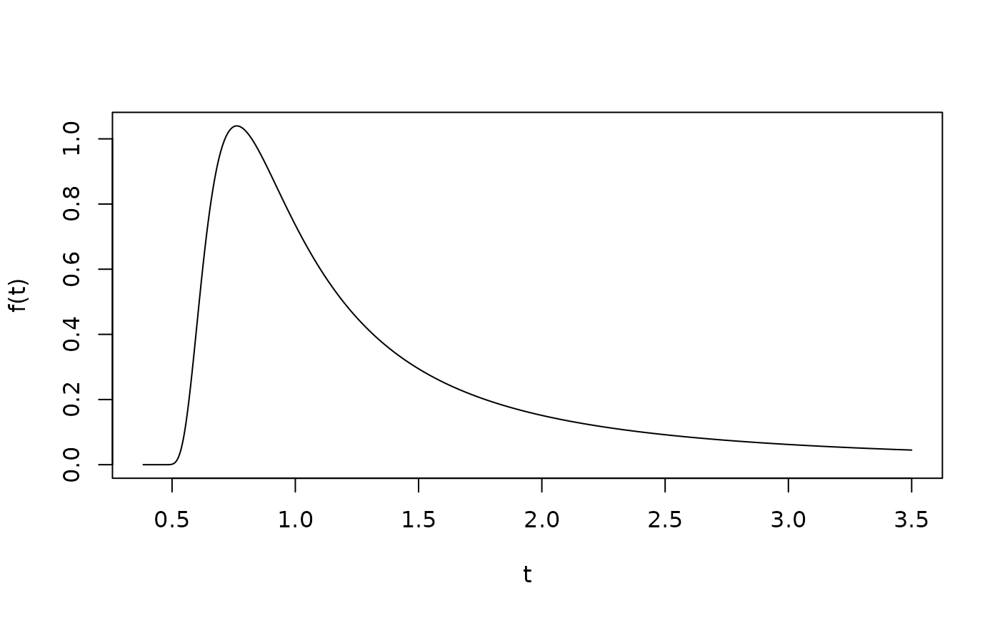

Computes \((t, f(t))\) pairs of the Extreme-Value Birnbaum-Saunders (EVBS) density over its support, for given parameters.
References
Ferreira, M., Gomes, M. I., and Leiva, V. (2012). On an extreme value version of the Birnbaum-Saunders distribution. REVSTAT, 10, 181–210.
Examples
d <- generate_evbs_data(alpha = 0.5, beta = 1, gama = 0.5)
plot(d$t, d$y, type = "l", xlab = "t", ylab = "f(t)")
